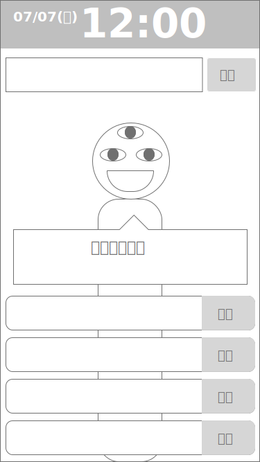
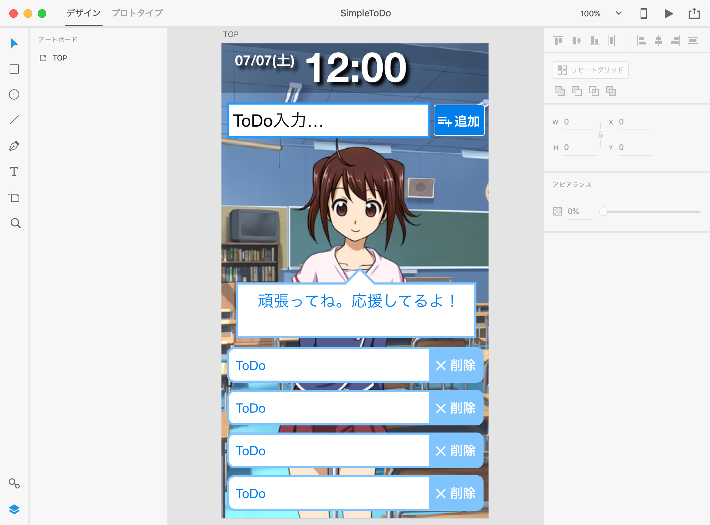

Djangoで作るToDo Webアプリ入門
〜マインドマップ作成から完成まで〜
これは「Webアプリのマインドマップ作成から完成までを学ぼう」という入門講座です。 実際のアプリ開発は、Django2(＋Python3)で行います。
Note
この講座では、Pythonの文法については解説していません。
もし、Pythonの文法を知りたい場合は、PythonWebやドットインストールがお勧めです。
また、気軽に筆者へ聞いてくれれば、何でも回答します。
この講座を完了すると、以下のようなWebアプリが完成します。
-
ワイヤーフレーム
 -
モックアップ
 -
完成

まずは、マインドマップの作成から始めましょう。